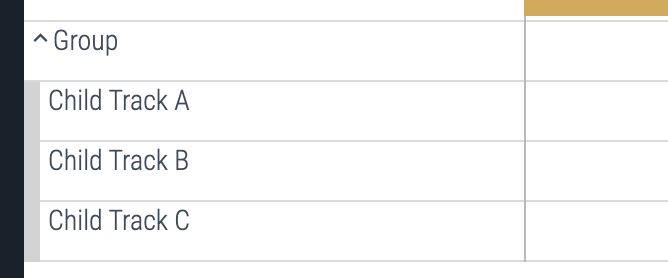
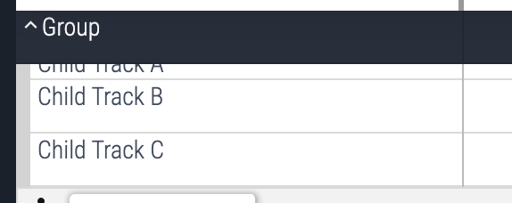

UI 插件
UI 插件允许开发者直接向 Perfetto 界面添加新的可视化和 profile 工具。通过利用丰富的扩展点，插件可以将 Perfetto 定制为特定的用例。
本指南提供了关于如何创建和向 Perfetto 贡献 UI 插件的全面说明。
如果这是你第一次向 Perfetto 贡献，请先遵循 Perfetto getting started，然后 UI getting started。
注意:所有插件目前都是树内（in-tree）的，即它们位于开源 Perfetto 代码库中，并与位于 https://ui.perfetto.dev 的 Perfetto 公共构建一起提供。如果你想添加闭源插件，你需要 fork 并托管你自己的 Perfetto 版本。目前，没有办法 sideload 闭源插件。
以 'com.example' 开头的插件 [这里](https://github.com/google/perfetto/tree/main/ui/src/plugins）提供了本文档中列出的功能的实时示例，因此如果你的特定功能有示例，请一定要查看。
你将在这篇文档中使用的公共插件 API 可以在这里浏览 这里。
入门
复制 skeleton 插件：
cp -r ui/src/plugins/com.example.Skeleton ui/src/plugins/<your-plugin-name>现在编辑 ui/src/plugins/<your-plugin-name>/index.ts。在文件中搜索所有
SKELETON: <instruction> 的实例并遵循说明。
命名注意事项：
- 插件应该使用你控制的域名的反向组件作为前缀。例如，如果
example.com是你的域名，你的插件应该命名为com.example.Foo。 - 避免在名称中包含 'plugin' 一词。
pluginId和目录名称必须匹配。- 前缀
dev.perfetto.保留给核心 Perfetto 团队维护的插件。
启动开发服务器
ui/run-dev-server现在导航到 localhost:10000
启用你的插件
- 导航到插件页面： localhost:10000/#!/plugins。
- Ctrl-F 搜索你的插件名称并启用它。
- 启用/禁用插件需要重启 UI，因此刷新页面以启动你的插件。
你可以请求你的插件默认启用。按照 默认插件 部分进行操作。
添加样式
要为你的插件添加自定义样式，在你的插件目录中创建一个 styles.scss 文件，位于 index.ts 文件旁边。
ui/src/plugins/<your-plugin-name>/styles.scss
构建系统将自动检测此文件并将其包含在主样式表中。你可以在此文件中使用任何标准 SCSS 语法。
例如，要更改插件中组件的背景颜色：
.pf-my-plugin-component {
background-color: blue;
}所有类名都应该以 pf- 为前缀，以避免与其他库冲突。
建议将你的样式限定在你的插件范围内，以避免与其他插件或核心 UI 冲突。一个好的做法是用一个唯一的类名包裹你的插件 UI。
上传你的插件进行审查
- 更新
ui/src/plugins/<your-plugin-name>/OWNERS以包含你的电子邮件。 - 按照 Contributing 说明将你的 PR 上传到 GitHub。
- 上传后，添加
stevegolton@google.com作为你的 PR 的审查者。
插件生命周期
onActivate 在应用首次启动时调用一次，传入 App 对象。此对象可用于注册核心扩展，如 pages、commands 和 sidebar links，这些将在 trace 加载之前可用。
当用户加载 trace 时，plugin 类被实例化并调用 onTraceLoad，传入 Trace 对象。此对象可用于注册特定于该 trace 生命周期的扩展，如 tracks、tabs 和 workspaces。
所有可以在 app 对象上注册的扩展也可以在 trace 对象上注册，但这些扩展只持续 trace 的生命周期。例如，在 trace 对象上注册的 command 只在该 trace 加载时可用，切换 traces 时会消失。通常，如果在 onTraceLoad() 钩子中完成此操作，则每次加载新 trace 时都会自动重新注册该扩展。
注意:不要在插件文件的主体中放置任何代码，因为不能保证核心在那时已经设置好。相反，等待核心通过
onActivate或onTraceLoad调用插件。
为了演示插件的生命周期，让我们检查一个实现了关键生命周期钩子并记录到终端的极简插件：
export default class implements PerfettoPlugin {
static readonly id = 'com.example.MyPlugin';
static onActivate(app: App): void {
// 在应用启动时调用一次
console.log('MyPlugin::onActivate()', app.pluginId);
// 注意：插件很少需要这个钩子，因为大多数插件对 trace 细节感兴趣。因此，这个函数通常可以省略。
}
constructor(trace: Trace) {
// 每次加载 trace 时调用
console.log('MyPlugin::constructor()', trace.traceInfo.traceTitle);
}
async onTraceLoad(trace: Trace): Promise<void> {
// 每次加载 trace 时调用
console.log('MyPlugin::onTraceLoad()', trace.traceInfo.traceTitle);
// 注意此函数返回一个 promise，因此任何异步调用都应该在此 promise 解决之前完成，因为应用使用此 promise 进行 timing 和插件同步。
}
}使用 devtools 运行此插件以在控制台中查看日志消息，这会让你感受插件的生命周期。尝试一个接一个地打开几个 traces。
性能
onActivate() 和 onTraceLoad() 通常应该尽快完成，但有时 onTraceLoad() 可能需要对 trace processor 执行异步操作，例如执行查询和/或创建 views 和 tables。因此，onTraceLoad() 应该返回一个 promise（或者你可以简单地将其设为 async 函数）。当此 promise 解决时，它告诉核心插件已完全初始化。
注意:重要的是在 onTraceLoad() 中完成的任何异步操作都要被 await，以便在 promise 解决时所有异步操作都已完成。这是为了插件可以被正确地计时和同步。
// 好的
async onTraceLoad(trace: Trace) {
await trace.engine.query(...);
}
// 不好的
async onTraceLoad(trace: Trace) {
// 注意缺少 await！
trace.engine.query(...);
}插件 API
有关更详细的信息和文档，请参阅 API 源代码
ui/src/public/ 或
众多示例插件（以 com.example.* 开头）
ui/src/plugins/。
从 app 对象获取 trace 对象
当加载 trace 时，app.trace 将返回当前的 trace 对象，或如果没有加载 trace 则返回 undefined。
查询 trace
一旦插件获得 trace，它就可以使用 trace 的 engine 属性对其执行查询。
const result = await trace.engine.query('select * from slice');
const schema = {id: NUM, ts: LONG, dur: LONG, name: STR};
for (const iter = result.iter(schema); iter.valid(); iter.next()) {
console.log(iter.id, iter.ts, iter.dur, iter.name);
}通常查询返回行列表，可以像示例中那样迭代。
Schema：
- 通知引擎我们期望列具有什么类型以及将每列转换为什么 JavaScript 类型。如果返回的类型无法强制转换为所需的类型，则会抛出错误。
- 通知 typescript 在编译时期望什么类型，
iter对象假设与 schema 相同的类型。
注意:JavaScript numbers 的问题。JavaScript number 类型实际上是双精度浮点数，因此只能表示最大为 2^53-1 的整数。Trace processor 可以表示 64 位整数，因此当转换为 js numbers 时，我们可能会丢失精度。这对于大数字（如 timestamps 和 durations）是个问题。
可能的 schema 类型如下：
NUM：表示数值。转换为 JavaScriptnumber。STR：表示字符串值。转换为 JavaScriptstring。LONG：表示大整数值（64位）。转换为 JavaScriptbigint。BLOB：表示二进制数据（Binary Large Object）。转换为 JavaScriptUint8Array。NUM_NULL：表示也可以为null的数值。转换为 JavaScriptnumber | null。STR_NULL：表示也可以为null的字符串值。转换为 JavaScriptstring | null。LONG_NULL：表示也可以为null的大整数值（64位）。转换为 JavaScriptbigint | null。BLOB_NULL：表示也可以为null的二进制数据。转换为 JavaScriptUint8Array | null。UNKNOWN：表示特定类型未严格定义或可以为null的列。它通常用作 nullable 类型扩展的基础类型。未指定时，所有整数值都将转换为 bigint。
选择
插件可以以编程方式控制 Perfetto UI 中选择的内容。这主要使用 trace.selection 对象上可用的方法完成。
你通常想要选择一个实体以查找有关该实体的更多信息，这些信息显示在当前选择面板中。Selections 通常由用户调用，但也可以以编程方式控制。
你可以通过 trace.selection.selection 随时访问当前选择详细信息。此对象有一个 kind 属性（例如，'track_event'、'area'、'note'、'empty'）和特定于选择类型的其他属性。可以将可选的 SelectionOpts 对象传递给选择方法，以影响 UI 行为，如自动滚动到选择或切换到 "Current Selection" 标签页。
选择选项 (SelectionOpts)
SelectionOpts 对象可以传递给大多数选择方法以自定义 UI 对新选择的响应。它具有以下可选属性：
switchToCurrentSelectionTab?: boolean：如果为true（默认值），UI 将自动切换到详细信息面板中的 "Current Selection" 标签页。设置为false以保持当前标签页活动。scrollToSelection?: boolean：如果为true，Timeline 将尝试滚动以将新选择的项目带入视图。默认为false。
选择 Track Event（事件、slice、counter sample 等）
要在 track 上选择单个事件：
trace.selection.selectTrackEvent('my.track', 123);选择 Area（时间范围）
要选择特定时间范围，可能跨多个 tracks。Area 对象需要 start（时间）、end（时间）和 trackUris 数组（string[]）。
trace.selection.selectArea({
start: Time.fromRaw(123n), // 时间（纳秒）
end: Time.fromRaw(456n), // 时间（纳秒）
trackUris: ['track.foo', 'track.bar'], // 要包含的 track URI 数组
});选择整个 Track
选择整个 track 会在 Timeline 中高亮显示它，并在 drawer 中显示 track 详细信息。
trace.selection.selectTrack('my.track');通过 SQL 表和 ID 选择事件
如果你有来自特定 SQL 表（例如 slice 表）的事件 ID，但没有其直接的 track URI，Perfetto 可以尝试解析并选择它。某些 tracks 直接表示 well known 表中的行，但是否正确连接这些由插件开发者决定。
trace.selection.selectSqlEvent('slice', 123);清除当前选择
要取消选择 UI 中当前选择的任何内容：
trace.selection.clearSelection();固定 Tracks
插件的常见任务是固定某些有趣的 tracks（通常是 command 的结果）。
这可以通过在 workspace 中找到适当的 track 并调用其 pin() 方法来实现。这将把它固定到其父 workspace 的顶部。
trace.workspace
.flatTracks()
.find((t) => t.name.startsWith('foo'))
.forEach((t) => t.pin());工作区
Workspaces 是在 Perfetto UI 中组织和显示 tracks 的主要容器。它们允许用户管理 trace 数据的不同视图，保存 track 布局，并在它们之间切换。插件可以与 workspaces 交互以添加、删除和排列 tracks，以及创建和管理自定义 workspaces。
与 workspaces 相关的主要接口和类是 WorkspaceManager、
Workspace 和 TrackNode。这些通常通过 trace.workspaces（用于 manager）和 trace.workspace（用于当前活动的 workspace）在加载 trace 后访问。
Workspace Manager (trace.workspaces)
WorkspaceManager 提供对所有可用 workspaces 的概览和控制。它可以通过 trace.workspaces 访问。
关键方法和属性：
currentWorkspace: Workspace：引用当前活动 workspace 的只读属性。这与trace.workspace是相同的实例。all: ReadonlyArray<Workspace>：当前加载的所有 workspaces 的只读数组。createEmptyWorkspace(displayName: string): Workspace：创建一个具有给定显示名称的新空 workspace 并返回它。此新 workspace 不会自动切换。switchWorkspace(workspace: Workspace): void：将 UI 切换到显示提供的 workspace。
示例：创建并切换到新 Workspace
// 假设 'trace' 是 Trace 对象
const newWorkspace =
trace.workspaces.createEmptyWorkspace('My Custom Analysis');
trace.workspaces.switchWorkspace(newWorkspace);
console.log(`Switched to workspace: ${newWorkspace.title}`);Workspace (trace.workspace 或来自 WorkspaceManager 的实例）
Workspace 对象表示 tracks 的单个布局，包括主 track 区域和固定 track 区域。
关键属性：
id: string：workspace 的唯一、会话特定 ID。title: string：workspace 的人类可读标题（例如，默认情况下为 ""，或提供给 createEmptyWorkspace的名称）。可以修改。userEditable: boolean：指示用户是否可以修改此 workspace（默认为true）。pinnedTracksNode: TrackNode：一个特殊的TrackNode，用作固定 tracks 的根。添加到此处的 tracks 显示在 Timeline 顶部的固定区域。tracks: TrackNode：workspace 的主根TrackNode。所有常规 tracks 和 track groups 都是此节点的子节点。pinnedTracks: ReadonlyArray<TrackNode>：访问pinnedTracksNode子节点的便捷 getter。children: ReadonlyArray<TrackNode>：访问主tracks节点子节点的便捷 getter。
关键方法：
clear(): void：从主 track 区域和固定区域中删除所有 tracks。pinTrack(track: TrackNode): void：将给定TrackNode的轻量级克隆（包含uri、name、removable属性）添加到固定 tracks 区域。unpinTrack(track: TrackNode): void：从固定 tracks 区域删除 track（按uri匹配）。hasPinnedTrack(track: TrackNode): boolean：检查具有与给定track相同uri的 track 当前是否已固定。getTrackById(id: string): TrackNode | undefined：通过其唯一id找到TrackNode（在主区域或固定区域中）。这是 O(1) 操作。getTrackByUri(uri: string): TrackNode | undefined：通过其uri在主 tracks 区域中找到TrackNode。- Track 操作方法（委托给主
tracks节点）：addChildInOrder(child: TrackNode): ResultaddChildLast(child: TrackNode): ResultaddChildFirst(child: TrackNode): ResultaddChildBefore(child: TrackNode, referenceNode: TrackNode): ResultaddChildAfter(child: TrackNode, referenceNode: TrackNode): ResultremoveChild(child: TrackNode): void
flatTracksOrdered: ReadonlyArray<TrackNode>：返回主 track 区域中所有后代节点的扁平列表，按深度优先排序。flatTracks: ReadonlyArray<TrackNode>：返回主 track 区域中所有后代节点的扁平列表，无特定排序（如果顺序不重要，效率更高）。
Track Node (TrackNode)
TrackNode 是在 workspace 内构建 tracks 结构的基本构建块。TrackNode 可以表示单个 track（如果它有指向 TrackRenderer 的 uri）或一组 tracks（如果它有子节点）。
创建 TrackNode：
import {TrackNode} from '../../public'; // 根据需要调整路径
// 实际 track 的节点
const myRenderableTrackNode = new TrackNode({
name: 'My Slice Track',
uri: 'plugin.id#mySliceTrackUri', // 已注册 Track 的 URI
sortOrder: 100,
removable: true,
});
// 组的节点
const myGroupNode = new TrackNode({
name: 'My Analysis Group',
sortOrder: 50,
collapsed: false, // 开始展开
});TrackNodeArgs（构造函数参数）：
创建 TrackNode 时，你可以传递一个包含以下属性的可选对象（在 [TrackNodeArgs] 中定义）：
name: string：节点的可读的名称/标题。uri: string：如果此节点表示可渲染的 track，这是已注册TrackRenderer的 URI。headless: boolean（默认false）：如果为true，节点自己的 header/shell 不显示，其子节点显示为好像它们是此节点父节点的直接子节点。对于没有视觉嵌套的逻辑分组很有用。sortOrder: number：一个数字，用于在调用addChildInOrder时对节点进行排序。较高的数字通常首先出现（或根据特定父实现）。collapsed: boolean（默认true）：节点是否应该以折叠状态开始（子节点隐藏）。isSummary: boolean（默认false）：如果为true，此 track 作为其子节点的摘要。它获得特殊的样式和行为（例如，展开时 sticky）。removable: boolean（默认false）：如果为true，显示一个关闭按钮，允许用户从 workspace 中删除此节点。
关键 TrackNode 属性：
id: string：此节点实例的唯一、会话特定 ID。parent: TrackNode | undefined：父TrackNode。workspace: Workspace | undefined：此节点所属的Workspace（如果有）。children: ReadonlyArray<TrackNode>：有序的子TrackNode列表。hasChildren: boolean：节点是否有子节点。expanded: boolean/collapsed: boolean：当前展开状态。isPinned: boolean：如果此节点（或具有相同 URI 的节点）在 workspace 的固定区域中，则为 true。fullPath: ReadonlyArray<string>：从根节点到此节点的名称数组，表示其在层次结构中的路径。
关键 TrackNode 方法：
- 层次结构管理：
addChildInOrder(child: TrackNode): ResultaddChildLast(child: TrackNode): ResultaddChildFirst(child: TrackNode): ResultaddChildBefore(child: TrackNode, referenceNode: TrackNode): ResultaddChildAfter(child: TrackNode, referenceNode: TrackNode): ResultremoveChild(child: TrackNode): void：删除直接子节点。remove(): void：从其父节点中删除此节点并从 workspace 中取消固定。clear(): void：删除此节点的所有子节点。
- 状态与外观：
pin(): void：在其 workspace 中固定此 track。unpin(): void：取消固定此 track。expand(): voidcollapse(): voidtoggleCollapsed(): voidreveal(): void：展开所有祖先节点以使此节点可见。
- 遍历与查询：
getTrackById(id: string): TrackNode | undefined：通过其id找到后代节点（O(1)）。getTrackByUri(uri: string): TrackNode | undefined：通过其uri找到后代节点（O(1)）。flatTracksOrdered: ReadonlyArray<TrackNode>：所有后代的扁平列表（深度优先）。flatTracks: ReadonlyArray<TrackNode>：所有后代的扁平列表（无序，更快）。
clone(deep = false): TrackNode：创建此节点的副本。如果deep为 true，子节点也会被克隆。
示例：构建 Track 层次结构
// 假设 'trace' 是 Trace 对象，'workspace' 是 trace.workspace
const parentGroup = new TrackNode({name: 'CPU Analysis'});
workspace.addChildLast(parentGroup);
const cpu0FreqTrack = new TrackNode({
name: 'CPU 0 Frequency',
uri: 'perfetto.CpuFrequency#cpu0', // 示例 URI
sortOrder: 10,
});
parentGroup.addChildInOrder(cpu0FreqTrack);
const cpu1FreqTrack = new TrackNode({
name: 'CPU 1 Frequency',
uri: 'perfetto.CpuFrequency#cpu1', // 示例 URI
sortOrder: 20,
});
parentGroup.addChildInOrder(cpu1FreqTrack);
parentGroup.expand(); // 显示 CPU frequency tracks
cpu0FreqTrack.pin(); // 固定 CPU 0 frequency track此结构允许插件动态构建复杂且有组织的 track 布局，针对特定的分析任务。记住在使用 TrackNodes 引用其 URI 之前，使用 trace.tracks.registerTrack 注册你实际的 TrackRenderers。
命令
Commands 是 UI 中操作的快捷方式，用户可以通过 command palette 调用它们，可以通过按 Ctrl+Shift+P（在 Mac 上为 Cmd+Shift+P）打开，或在 omnibox 中键入 >，但也可以以编程方式调用。
注册 Commands
要添加 command，CommandManager（可作为 app.commands 或 trace.commands 使用）提供了 registerCommand 方法。
registerCommand(command: {
id: string;
name: string;
callback: (...args: any[]) => any;
defaultHotkey?: Hotkey
}): void;注册一个新 command。接受一个 Command 对象，如下所示：
id：唯一标识此 command 的字符串。id应该以插件 id 后跟#为前缀。所有 commandid必须在系统范围内唯一。name：command 的人类可读名称，显示在 command palette 中。callback：实际执行操作的回调。defaultHotkey：此 command 的可选默认热键。
请参阅 hotkey.ts 了解可用的热键 keys 和 modifiers。
注意:这被称为 'default' 热键，因为我们保留在未来添加用户修改其热键的功能的权利。
示例
appOrTrace.commands.registerCommand({
id: `${app.pluginId}#sayHello`,
name: 'Say hello',
callback: () => console.log('Hello, world!'),
});命名注意事项：
- Commands 应该有模式为
<pluginId>#doSomething的 id。 - Command ids 应该以其提供者的插件 id 为前缀。
- Command 名称应该有 "Verb something something" 的形式，应该使用正常的句子大小写。即不要大写每个单词的第一个字母。
- 好的："Pin janky frame timeline tracks"
- 不好的："Tracks are Displayed if Janky"
调用 Commands
除了注册自己的 commands 之外，插件还可以通过其 ID 调用任何现有的 command。这允许插件触发由其他插件或 Perfetto 核心提供的操作。CommandManager（可作为 app.commands 或 trace.commands 使用）为此提供了 runCommand 方法。
runCommand(commandId: string, ...args: any[]): any;执行由 commandId 标识的 command，将任何附加参数传递给 command 的回调。它返回一个 Promise，解析为 command 回调的结果（如果有）。
- 参数
commandId：要运行的 command 的 id。...args：直接传递给 command 回调。
- 返回
any：从 command 回调返回的任何内容。
示例：
// PluginA
appOrTrace.commands.registerCommand({
id: 'PluginA#increment',
name: 'Increment',
callback: (num) => num + 1,
});
// PluginB
try {
const result = appOrTrace.commands.runCommand('PluginA#increment', 1);
// result 应该是 2
} catch (e) {
console.error(`Failed to run command: ${(e as Error).message}`);
}插件可以通过查看其他插件的注册或引用核心 commands 的文档来发现 command IDs。
示例：
Track
为了向 Timeline 添加新 track，你需要创建两个实体：
- 一个 track，控制 track 的外观以及如何从 trace processor 获取数据。
- 一个 track node，指向 track 对象的指针，控制 track 在 workspace 中的显示位置。
Tracks 是向 UI 添加时间序列数据的主要方式。
使用 trace.tracks.registerTrack 添加 track。
registerTrack(track: {
uri: string;
track: TrackRenderer;
description?: string | (() => m.Children);
subtitle?: string;
tags?: TrackTags;
chips?: ReadonlyArray<string>;
}): void;向 Perfetto 注册新 track。传递一个 Track 对象，包括：
uri：此 track 的唯一 id。track：Track renderer - 描述此 track 如何加载数据并将其渲染到 canvas。description：此 track 的人类可读描述或帮助文本。subtitle：显示在 track 标题下方。tags：任意的键值对。chipd：显示在 track 标题右侧的字符串列表。
Track renderers 功能强大但复杂，因此强烈建议不要创建你自己的。相反，开始使用 tracks 的最简单方法是使用 createQuerySliceTrack 和 createQueryCounterTrack 帮助器。
示例：
import {createQuerySliceTrack} from '../../components/tracks/query_slice_track';
// ~~ snip ~~
const uri = `${trace.pluginId}#MyTrack`;
// 基于查询创建新 track renderer
const renderer = await createQuerySliceTrack({
trace,
uri,
data: {
sqlSource: 'select * from slice where track_id = 123',
},
});
// 向核心注册 track renderer
trace.tracks.registerTrack({uri, renderer});
// 创建使用其 uri 引用 track 的 track node
const trackNode = new TrackNode({uri, name: 'My Track'});
// 将 track node 添加到当前 workspace
trace.workspace.addChildInOrder(trackNode);请参阅 the source 了解详细用法。
你也可以使用 createQueryCounterTrack 添加 counter track，其工作方式类似。
import {createQueryCounterTrack} from '../../components/tracks/query_counter_track';
export default class implements PerfettoPlugin {
static readonly id = 'com.example.MyPlugin';
async onTraceLoad(trace: Trace) {
const title = 'My Counter Track';
const uri = `${trace.pluginId}#MyCounterTrack`;
const query = 'select * from counter where track_id = 123';
// 基于查询创建新 track renderer
const renderer = await createQueryCounterTrack({
trace,
uri,
data: {
sqlSource: query,
},
});
// 向核心注册 track renderer
trace.tracks.registerTrack({uri, title, renderer});
// 创建使用其 uri 引用 track 的 track node
const trackNode = new TrackNode({uri, title});
// 将 track node 添加到当前 workspace
trace.workspace.addChildInOrder(trackNode);
}
}请参阅 the source 了解详细用法。
Track 描述 / 帮助文本
如果在注册 track 时提供了 description 属性，任何引用该 track 的 TrackNode 都将在其 shell 中显示一个帮助按钮。单击时，会出现一个弹出窗口，包含 description 的内容。
description 可以是简单的字符串，也可以是返回 Mithril vnodes 的函数。使用函数对于将丰富的内容（如超链接）嵌入弹出窗口很有用。
例如：
ctx.tracks.registerTrack({
description: () => {
return m('', [
`Shows which threads were running on CPU ${cpu.toString()} over time.`,
m('br'),
m(
Anchor,
{
href: 'https://perfetto.dev/docs/data-sources/cpu-scheduling',
target: '_blank',
icon: Icons.ExternalLink,
},
'Documentation',
),
]);
},
// ...
});description 属性是 Track 注册的一部分，而不是 TrackNode，因为 TrackNodes 必须可序列化为 JSON，而函数（description 可以是）不是。
这对 track groups 有影响。如果你想向仅作为组且没有可渲染 Track 与之关联的 TrackNode 添加帮助文本，你必须为其注册一个 "dummy" track。这个 dummy track 可以有一个空的 renderer，但将携带 description。
const uri = `com.example.Tracks#GroupWithHelpText`;
trace.tracks.registerTrack({
uri,
renderer: {
// 空的 track renderer
render: () => {},
},
description: () => [
'This is a group track with some help text.',
m('br'),
'Use Mithril vnodes for formatting.',
],
});
// 现在创建引用 dummy track URI 的组节点。
const groupNode = new TrackNode({uri, name: 'Group with Help Text'});示例： https://github.com/google/perfetto/blob/main/ui/src/plugins/com.example.Tracks/index.ts
分组 Tracks
任何 track 都可以有子节点。只需使用其 addChildXYZ() 方法向任何 TrackNode 对象添加子节点。嵌套的 tracks 渲染为可折叠的树。
const group = new TrackNode({title: 'Group'});
trace.workspace.addChildInOrder(group);
group.addChildLast(new TrackNode({title: 'Child Track A'}));
group.addChildLast(new TrackNode({title: 'Child Track B'}));
group.addChildLast(new TrackNode({title: 'Child Track C'}));带有子节点的 Tracks 节点可以由用户在运行时手动折叠和展开，或使用其 expand() 和 collapse() 方法以编程方式折叠和展开。默认情况下，tracks 是折叠的，因此要 tracks 在启动时自动展开，你需要在添加 track node 后调用 expand()。
group.expand();
Summary tracks 的行为与普通 tracks 略有不同。Summary tracks：
- 折叠时渲染为浅蓝色背景，展开时为深蓝色。
- 滚动时粘在视口顶部。
- 在 track 上进行的区域选择适用于子 tracks 而不是 summary track 本身。
要创建 summary track，在其初始化程序列表中设置 isSummary: true 选项或在创建后将其 isSummary 属性设置为 true。
const group = new TrackNode({title: 'Group', isSummary: true});
// ~~~ 或 ~~~
group.isSummary = true;
示例
Track 排序
可以使用 track node api 上可用的 addChildXYZ() 函数手动重新排序 tracks，包括 addChildFirst()、addChildLast()、
addChildBefore() 和 addChildAfter()。
请参阅 the workspace source 了解详细用法。
然而，当多个插件向同一节点或 workspace 添加 tracks 时，没有一个插件完全控制该节点内子节点的排序。因此，sortOrder 属性用于在插件 s 之间分散排序逻辑。
为此，我们只需给 track 一个 sortOrder 并在父节点上调用 addChildInOrder()，track 将被放置在列表中具有更大 sortOrder 的第一个 track 之前。（即较低的 sortOrders 显示在堆栈的较高位置）。
// PluginA
workspace.addChildInOrder(new TrackNode({title: 'Foo', sortOrder: 10}));
// Plugin B
workspace.addChildInOrder(new TrackNode({title: 'Bar', sortOrder: -10}));现在，无论插件以何种顺序初始化，track Bar 都将出现在 track Foo 上方（除非稍后重新排序）。
如果没有定义 sortOrder，track 假定为 sortOrder 0。
建议在插件s 中始终使用
addChildInOrder()向workspace添加 tracks，特别是如果你想让你的插件默认启用，因为这将确保它尊重其他插件的 sortOrder。
DatasetSliceTrack
DatasetSliceTrack 是一个多功能的 track renderer 类，允许对基于 slice 的 tracks 的行为和外观进行更细粒度的控制。它是 createQuerySliceTrack 使用的底层组件，但提供了一组更丰富的自定义选项。
要使用 DatasetSliceTrack，你需要用 DatasetSliceTrackAttrs 实例化它，包括：
trace：Trace对象。uri：track 的唯一 URI。dataset：这是 track 数据的核心。它是一个SourceDataset<T>（或返回一个的函数），定义了 slices 的 SQL 查询或表和 schema。- 必需的列：
id(NUM)：每个 slice 的唯一标识符。ts(LONG)：事件的时间戳（纳秒）。如果存在dur，这是开始时间，否则是即时时间。
- 可选的列：
dur(LONG)：事件的持续时间（纳秒）。如果缺失，slices 是瞬时的。depth(NUM)：slices 的垂直排列。layer(NUM)：影响 mipmap 生成；较高的层渲染在顶部。
- 必需的列：
sliceLayout（可选）：一个对象，用于自定义 slices 的几何和布局（例如，padding、rowHeight）。instantStyle（可选）：一个对象，用于定义即时事件（没有dur的事件）的自定义渲染。它需要一个width和一个render函数。colorizer（可选）：一个函数(row: T) => ColorScheme，用于根据数据动态设置每个 slice 的颜色。sliceName（可选）：一个函数(row: T) => string，用于设置每个 slice 上显示的文本。默认为数据集中的name列。tooltip（可选）：一个函数(slice: SliceWithRow<T>) => m.Children，用于在悬停在 slice 上时提供自定义 Mithril 内容的 tooltip。detailsPanel（可选）：一个函数(row: T) => TrackEventDetailsPanel，用于在选中 slice 时定义自定义详细信息面板。fillRatio（可选）：一个函数(row: T) => number（在 0.0 和 1.0 之间），用于在 slice 内渲染水平条，适用于显示利用率或进度。shellButtons（可选）：一个函数() => m.Children，用于向 track 的 shell 添加自定义 Mithril 按钮。initialMaxDepth（可选）：最大深度的估计值，用于在初始加载期间稳定 track 高度。rootTableName（可选）：ID 命名空间解析的基础表名。forceTsRenderOrder（可选）：如果为 true，强制按时间戳顺序渲染，这对于有许多重叠即时事件的 tracks 很有用，可能以小的性能成本为代价。
示例：
const trackUri = `${trace.pluginId}#MyCustomSliceTrack`;
// 定义你的 dataset
const myDataset: SourceDataset<MySliceRow> = {
name: 'my_custom_slices', // 描述性名称
schema: {
id: NUM,
ts: LONG,
name: STR,
category: STR,
dur: LONG, // 假设你的事件有持续时间
depth: NUM, // 假设你想控制深度
},
query: `
SELECT
slice_id as id,
ts,
dur,
depth,
name,
category
FROM my_slice_table_or_view
`,
};
const renderer = new DatasetSliceTrack<MySliceRow>({
trace,
uri: trackUri,
dataset: myDataset,
sliceName: (row) => `${row.category}: ${row.name}`,
colorizer: (row) => {
if (row.category === 'important') {
return {background: '#FF0000', foreground: '#FFFFFF'}; // 红色
}
return {background: '#0000FF', foreground: '#FFFFFF'}; // 蓝色
},
tooltip: (slice) => {
return m('div', [
m('div', `Name: ${slice.row.name}`),
m('div', `Category: ${slice.row.category}`),
m('div', `Duration: ${formatDuration(trace, slice.dur)}`),
]);
},
// 添加其他自定义设置，如 detailsPanel、fillRatio 等。
});
// 注册 track renderer
trace.tracks.registerTrack({
uri: trackUri,
title: 'My Custom Slices',
renderer,
});
// 像往常一样将 track node 添加到 workspace
const trackNode = new TrackNode({
uri: trackUri,
title: 'My Custom Slices',
});
trace.workspace.addChildInOrder(trackNode);此方法为你如何查询、处理和显示 track 数据提供了显著的灵活性。请记住查阅
DatasetSliceTrack
和相关接口的源代码，以获取最新的详细信息和高级用法模式。
Timeline 叠加层
Timeline overlays 允许插件在 Timeline 上绘制，跨越多个 tracks。这对于绘制注释以显示不同 tracks 之间的关系很有用，例如 flow 箭头或标记重要事件的垂直线。
要创建 timeline overlay，你需要实现 Overlay 接口并向 track manager 注册它。
import {Overlay, TrackBounds} from '../../public';
class MyOverlay implements Overlay {
render(
ctx: CanvasRenderingContext2D,
timescale: TimeScale,
size: Size2D,
tracks: ReadonlyArray<TrackBounds>,
): void {
// 绘制逻辑在这里
}
}render 方法在每一帧调用，并提供以下参数：
ctx：overlay 的CanvasRenderingContext2D。这是在 canvas 上绘制形状、线条和文本的主要工具。timescale：一个TimeScale对象，帮助在 trace 时间和水平像素坐标之间转换。使用timescale.timeToPx(time)查找给定时间戳的 x 坐标。size：一个Size2D对象，包含整个 overlay canvas 的width和height。tracks：一个ReadonlyArray<TrackBounds>。每个TrackBounds对象包含 track 的node及其verticalBounds（track 在 canvas 上的top和bottomy 坐标）。此数组允许你找到 Timeline 上任何 track 的确切位置，这对于绘制与特定 tracks 对齐的注释至关重要。
一旦你有了 overlay 类，在你的插件的 onTraceLoad 方法中注册它：
export default class implements PerfettoPlugin {
static readonly id = 'com.example.MyPlugin';
async onTraceLoad(trace: Trace) {
trace.tracks.registerOverlay(new MyOverlay());
}
}WakerOverlay 是 track overlay 的一个好例子，它在 thread 的 waker 和 thread 本身之间绘制箭头。你可以在 ui/src/plugins/dev.perfetto.Sched/waker_overlay.ts 中找到其源代码。
标签页
Tabs 是显示关于 trace、当前选择或操作结果的上下文信息的有用方式。
要从插件注册 tab，使用 Trace.registerTab 方法。
class MyTab implements Tab {
render(): m.Children {
return m('div', 'Hello from my tab');
}
getTitle(): string {
return 'My Tab';
}
}
export default class implements PerfettoPlugin {
static readonly id = 'com.example.MyPlugin';
async onTraceLoad(trace: Trace) {
trace.registerTab({
uri: `${trace.pluginId}#MyTab`,
content: new MyTab(),
});
}
}你需要传入一个类似 tab 的对象，即实现 Tab 接口的东西。Tabs 只需要定义其标题和指定如何渲染 tab 的 render 函数。
注册的 tabs 不会立即出现 - 我们需要先显示它。所有注册的 tabs 都显示在 tab 下拉菜单中，可以通过单击下拉菜单中的条目来显示或隐藏。
也可以通过单击其 handle 右上角的小 x 来隐藏 tabs。
或者，可以使用 tabs API 以编程方式显示或隐藏 tabs。
trace.tabs.showTab(`${trace.pluginId}#MyTab`);
trace.tabs.hideTab(`${trace.pluginId}#MyTab`);Tabs 具有以下属性：
- 每个 tab 都有一个唯一的 URI。
- 一次只能打开一个 tab 实例。多次使用相同的 URI 调用 showTab 只会激活 tab，而不会将 tab 的新实例添加到 tab bar。
短暂 Tabs
默认情况下，tabs 被注册为 'permanent' tabs。这些 tabs 具有以下附加属性：
- 它们出现在 tab 下拉菜单中。
- 关闭后它们仍然存在。Plugin 控制 tab 对象的生命周期。
相比之下，短暂 tabs 具有以下属性：
- 它们不会出现在 tab 下拉菜单中。
- 隐藏时，它们将自动注销。
可以通过在注册 tab 时设置 isEphemeral 标志来注册短暂 tabs。
trace.registerTab({
isEphemeral: true,
uri: `${trace.pluginId}#MyTab`,
content: new MyEphemeralTab(),
});短暂 tabs 通常作为某些用户操作的结果添加，例如运行 command。因此，注册 tab 并同时显示 tab 是常见模式。
激励示例：
import m from 'mithril';
import {uuidv4} from '../../base/uuid';
class MyNameTab implements Tab {
constructor(private name: string) {}
render(): m.Children {
return m('h1', `Hello, ${this.name}!`);
}
getTitle(): string {
return 'My Name Tab';
}
}
export default class implements PerfettoPlugin {
static readonly id = 'com.example.MyPlugin';
async onTraceLoad(trace: Trace): Promise<void> {
trace.registerCommand({
id: `${trace.pluginId}#AddNewEphemeralTab`,
name: 'Add new ephemeral tab',
callback: () => handleCommand(trace),
});
}
}
function handleCommand(trace: Trace): void {
const name = prompt('What is your name');
if (name) {
const uri = `${trace.pluginId}#MyName${uuidv4()}`;
// 这使 tab 对 perfetto 可用
ctx.registerTab({
isEphemeral: true,
uri,
content: new MyNameTab(name),
});
// 这在 tab bar 中打开 tab
ctx.tabs.showTab(uri);
}
}侧边栏菜单项
插件可以向侧边栏菜单添加新条目，该菜单出现在 UI 的左侧。这些条目可以包括：
- Commands
- Links
- 任意 Callbacks
命令
如果引用了 command，command 名称和热键将显示在侧边栏项上。
trace.commands.registerCommand({
id: 'sayHi',
name: 'Say hi',
callback: () => window.alert('hi'),
defaultHotkey: 'Shift+H',
});
trace.sidebar.addMenuItem({
commandId: 'sayHi',
section: 'support',
icon: 'waving_hand',
});链接
如果存在 href，侧边栏将用作链接。这可以是 page 的内部链接，或外部链接。
trace.sidebar.addMenuItem({
section: 'navigation',
text: '插件',
href: '#!/plugins',
});回调
可以指示 Sidebar 项在单击按钮时执行任意 callbacks。
trace.sidebar.addMenuItem({
section: 'current_trace',
text: 'Copy secrets to clipboard',
action: () => copyToClipboard('...'),
});如果 action 返回一个 promise，sidebar 项将显示一个小的 spinner 动画，直到 promise 返回。
trace.sidebar.addMenuItem({
section: 'current_trace',
text: 'Prepare the data...',
action: () => new Promise((r) => setTimeout(r, 1000)),
});所有类型的 sidebar 项的可选参数：
icon- 显示在侧边栏菜单项旁边的 material design 图标。 请参阅完整列表 here。tooltip- 悬停时显示section- 放置菜单项的位置。navigationcurrent_traceconvert_traceexample_tracessupport
sortOrder- sortOrder 越低，条越靠上。
请参阅 sidebar source 了解更详细的用法。
页面
Pages 是可以通过 URL 参数路由的实体，其内容占据 sidebar 右侧和 topbar 下方的整个可用空间。Page 的示例包括 Timeline、记录页面和查询页面，仅举几个常见示例。
例如：
http://ui.perfetto.dev/#!/viewer <-- 'viewer' 是当前页面。Pages 通过调用 pages.registerPage 函数从插件添加。
Pages 可以与 trace 或 app 上下文注册。与 trace 注册的 Pages 在切换 traces 时自动删除。在 app 上注册的 Traces 将在加载 trace 之前出现。
在 onActivate() 中注册的与 app 注册的 Traces 应该这样做，而与 trace 注册的 traces 应该在 onTraceLoad() 中完成。
Page 只是一个 render 函数，在页面处于活动状态时每个 Mithril 渲染周期调用。它应该返回将在页面区域内显示的 mithril 组件。在 render 函数中，只需正常渲染 mithril 组件。
trace.pages.registerPage({
route: '/mypage',
render: () => m('', 'Hello from my page!'),
});子页面
render() 回调接受一个参数 subpage，这是一个可选字符串，如果存在，定义子路由。例如，page 之后的 #!/<route>/<subpage> 之后的第一个 / 之后的任何内容。这可用于向你的 page 添加额外的子部分。
示例：
状态栏
插件可以向 statusbar 添加项目，statusbar 显示在 UI 的底部。
要从插件添加 statusbar 项目，使用 trace.statusbar.registerItem 方法。
trace.statusbar.registerItem({
renderItem: () => ({
label: 'My Statusbar Item',
icon: 'settings',
onclick: () => console.log('Statusbar item clicked'),
}),
popupContent: () => m('div', 'Hello from my statusbar item popup'),
});renderItem 回调应该返回一个具有以下属性的对象：
label：在 statusbar 中显示的文本。icon：显示在标签旁边的可选 material design 图标。intent：可选的 intent，用于更改标签的颜色。onclick：单击 statusbar 项时调用的可选回调。
popupContent 回调是可选的，当单击 statusbar 项时，应返回要在弹出窗口中显示的 mithril 内容。
Omnibox 提示
插件可以利用 omnibox 提示用户输入。这比标准的浏览器 window.prompt() 更集成，可用于自由格式文本或从预定义选项列表中选择。OmniboxManager 可通过 app.omnibox（在 onActivate 中）或 trace.omnibox（在 onTraceLoad 中）使用。
主要方法是 prompt()：
prompt(text: string): Promise<string | undefined>：用于自由格式文本输入。prompt(text: string, choices: ReadonlyArray<string>): Promise<string | undefined>： 用于从简单字符串列表中选择。prompt<T>(text: string, choices: PromptChoices<T>): Promise<T | undefined>： 用于从自定义对象列表中选择。PromptChoices<T>需要：values: ReadonlyArray<T>：对象数组。getName: (x: T) => string：一个函数，用于获取每个对象的显示名称。
当用户输入/选择或取消提示（例如，通过按 Escape）时，promise 解析为用户的输入/选择或 undefined。
示例：
1. 自由格式输入：
// 在 onActivate 或 onTraceLoad 中
// const appOrTrace: App | Trace = ...;
async function askForName(omnibox: OmniboxManager) {
const name = await omnibox.prompt(
'Enter a friendly name for the new marker:',
);
if (name) {
console.log(`User entered: ${name}`);
// 继续使用名称
} else {
console.log('User cancelled the prompt.');
}
}
// 调用它：
// askForName(appOrTrace.omnibox);2. 简单选项列表：
async function chooseColor(omnibox: OmniboxManager) {
const color = await omnibox.prompt('Choose a highlight color:', [
'red',
'green',
'blue',
'yellow',
]);
if (color) {
console.log(`User chose: ${color}`);
// 应用颜色
}
}
// chooseColor(appOrTrace.omnibox);3. 自定义对象列表：
interface ProcessChoice {
pid: number;
name: string;
threadCount: number;
}
async function selectProcess(
omnibox: OmniboxManager,
processes: ProcessChoice[],
) {
const selectedProcess = await omnibox.prompt<ProcessChoice>(
'Select a process to focus on:',
{
values: processes,
getName: (p) => `${p.name} (PID: ${p.pid}, Threads: ${p.threadCount})`,
},
);
if (selectedProcess) {
console.log(
`User selected process: ${selectedProcess.name} (PID: ${selectedProcess.pid})`,
);
// 聚焦于选定的进程
}
}
// const exampleProcesses: ProcessChoice[] = [
// {pid: 123, name: 'system_server', threadCount: 150},
// {pid: 456, name: 'com.example.app', threadCount: 25},
// ];
// selectProcess(appOrTrace.omnibox, exampleProcesses);此功能允许在你的插件中直接在 omnibox 中创建交互式工作流。
区域选择标签页
插件可以注册 tabs 以在 Timeline 的某个区域被选中时显示在详细信息面板中。
要注册 area selection tab，使用 trace.selection.registerAreaSelectionTab 方法。
trace.selection.registerAreaSelectionTab({
id: 'my-area-selection-tab',
name: 'My Area Selection Tab',
render: (selection) => {
return m('div', `Selected area: ${selection.start} - ${selection.end}`);
},
});render 回调应该返回在 tab 中显示的 mithril 内容。
selection 参数是一个 AreaSelection 对象，包含有关所选区域的信息。
示例：
Metric 可视化
待定
示例：
状态
NOTE: 使用持久状态时必须考虑版本偏差。
插件可以将信息持久化到 permalinks 中。这允许插件优雅地处理永久链接，并且是一个选择加入的机制，不是自动的。
持久化插件状态使用 Store<T>，其中 T 是某些 JSON 可序列化对象。Store 实现
这里。
Store 允许读取和写入 T。读取：
interface Foo {
bar: string;
}
const store: Store<Foo> = getFooStoreSomehow();
// store.state 是不可变的，不得编辑。
const foo = store.state.foo;
const bar = foo.bar;
console.log(bar);写入：
interface Foo {
bar: string;
}
const store: Store<Foo> = getFooStoreSomehow();
store.edit((draft) => {
draft.foo.bar = 'Hello, world!';
});
console.log(store.state.foo.bar);
// > Hello, world!首先为你的特定插件状态定义一个接口。
interface MyState {
favouriteSlices: MySliceInfo[];
}要访问永久链接状态，请在 Trace 对象上调用 mountStore()，传入 migration 函数。
export default class implements PerfettoPlugin {
static readonly id = 'com.example.MyPlugin';
async onTraceLoad(trace: Trace): Promise<void> {
const store = trace.mountStore(migrate);
}
}
function migrate(initialState: unknown): MyState {
// ...
}关于 migration，需要考虑两种情况：
- 加载新 trace
- 从永久链接加载
在新 trace 的情况下，你的 migration 函数以 undefined 调用。在这种情况下，你应该返回 MyState 的默认版本：
const DEFAULT = {favouriteSlices: []};
function migrate(initialState: unknown): MyState {
if (initialState === undefined) {
// 返回 MyState 的默认版本。
return DEFAULT;
} else {
// 在这里迁移旧版本。
}
}在永久链接的情况下，你的 migration 函数以生成永久链接时的插件 store 状态调用。这可能来自插件的旧版本或新版本。
插件不得对 initialState 的内容做任何假设！
在这种情况下，你需要仔细验证状态对象。这可以通过几种方式实现，但没有一种是特别直接的。状态迁移很困难！
一种暴力方法是使用版本号。
interface MyState {
version: number;
favouriteSlices: MySliceInfo[];
}
const VERSION = 3;
const DEFAULT = {favouriteSlices: []};
function migrate(initialState: unknown): MyState {
if (initialState && (initialState as {version: any}).version === VERSION) {
// 版本号检查通过，假设结构正确。
return initialState as State;
} else {
// Null、undefined 或错误的版本号 - 返回默认值。
return DEFAULT;
}
}更改时你需要记住更新你的版本号！迁移应该进行单元测试以确保兼容性。
示例：
功能标志
插件可以注册 feature flags，允许用户打开或关闭实验性或开发中的功能。这对于逐步推出新功能或为高级用户提供选项很有用。Feature flags 通常在 onActivate 生命周期钩子中使用 app.featureFlags manager 注册。
注意：Feature flags 最适合用于在开发和推出期间对新功能或实验性进行门控。它们作为临时切换工作良好，这些切换有计划一旦功能稳定就删除（要么使其成为默认行为，要么完全删除它）。如果功能需要持续的用户配置，请考虑使用 Custom Settings 代替，因为它们为永久首选项提供了更好的用户体验。
要注册 feature flag，你提供 FlagSettings：
id(string)：flag 的唯一标识符（例如， "com.example.MyPlugin#myCoolFeature"）。defaultValue(boolean)：flag 的默认状态（true 为开，false 为关）。description(string)：在 UI 中向用户显示的详细描述（例如，在 flags 页面中）。name(string, optional)：flag 的人类可读名称。如果省略，则使用id。devOnly(boolean, optional)：如果为 true，则 flag 仅在 Perfetto 的 developer builds 中可见。
register 方法返回一个 Flag 对象，该对象提供与 flag 状态交互的方法：
get(): boolean：返回 flag 的当前值。set(value: boolean)：覆盖 flag 的当前值并持久化它。isOverridden(): boolean：检查 flag 的值是否已从默认值手动更改。reset()：将 flag 重置为其defaultValue。overriddenState(): OverrideState：返回当前的覆盖状态 （DEFAULT、OVERRIDE_TRUE、OVERRIDE_FALSE）。
示例：
import {Flag, FlagSettings} from '../../public/featureflag'; // 根据需要调整路径
import {App} from '../../public/app';
import {PerfettoPlugin} from '../../public/plugin';
import {Trace} from '../../public/trace';
export default class MyFeatureFlagPlugin implements PerfettoPlugin {
static readonly id = 'com.example.MyFeatureFlagPlugin';
private static enableExperimentalTracks: Flag;
static onActivate(app: App): void {
// 注册一个 feature flag 来控制实验性 tracks
this.enableExperimentalTracks = app.featureFlags.register({
id: `${this.id}#enableExperimentalTracks`,
name: 'Enable Experimental Memory Tracks',
defaultValue: false,
description:
'Enables experimental memory analysis tracks that show detailed heap allocations and memory pressure events. These tracks are under active development.',
devOnly: true, // 仅在 development builds 中可见
});
// 注册一个仅在 flag 启用时可用的 command
if (this.enableExperimentalTracks.get()) {
app.commands.registerCommand({
id: `${this.id}#analyzeMemoryLeaks`,
name: 'Analyze potential memory leaks',
callback: () => console.log('Running experimental leak detection...'),
});
}
}
async onTraceLoad(trace: Trace): Promise<void> {
// 仅在 feature flag 启用时添加实验性 tracks
if (MyFeatureFlagPlugin.enableExperimentalTracks.get()) {
// ... 添加 track ...
}
}
}用户通常可以通过 Perfetto UI 中专门的 "Flags" 页面管理这些 flags，在那里他们可以查看描述并切换它们。
自定义设置
插件可以定义和注册自己的设置，允许用户自定义插件行为。这些设置通过 SettingsManager 管理，可通过 app.settings（通常在 onActivate 中）或 trace.settings 使用。注册的设置出现在主 Perfetto settings 页面中。
要注册设置，你提供 SettingDescriptor<T>：
id(string)：设置的唯一标识符（例如， "com.example.MyPlugin#myCustomPreference"）。这也用作存储键。name(string)：在 settings UI 中显示的人类可读名称。description(string)：设置功能的详细说明。schema(z.ZodType<T>)：一个 Zod schema，定义设置的值类型和验证规则。这对于确保类型安全和数据完整性至关重要。defaultValue(T)：如果用户未明确设置，则设置将具有的值。requiresReload(boolean, optional)：如果为true，当更改此设置时，用户将被提示重新加载 Perfetto UI，因为其效果可能仅在启动时应用。render(SettingRenderer<T>, optional)：一个函数(setting: Setting<T>) => m.Children，返回 Mithril 内容以在 settings 页面中为此设置渲染自定义 UI。这对于非原始类型（对象、数组）或需要更专业的输入控件（例如，slider、自定义下拉菜单）时特别有用。如果未提供，将尝试基于 schema 类型的默认 UI（例如，boolean 的 checkbox、string/number 的 text input）。
settings.register() 方法返回一个 Setting<T> 对象，它扩展了描述符并提供与设置交互的方法：
get(): T：检索设置的当前值。set(value: T)：设置设置的新值。该值将根据 schema 进行验证。reset()：将设置恢复到其defaultValue。isDefault: boolean：一个只读属性，指示设置当前是否处于默认值。
示例：
import {Setting, SettingDescriptor} from '../../public/setting'; // 根据需要调整路径
import {App} from '../../public/app';
import {PerfettoPlugin} from '../../public/plugin';
import {Trace} from '../../public/trace';
import {z} from 'zod';
import m from 'mithril';
// 为复杂设置定义 Zod schema
const MyComplexObjectSchema = z.object({
optionA: z.string().min(1),
optionB: z.number().int().positive(),
});
type MyComplexObject = z.infer<typeof MyComplexObjectSchema>;
export default class MySettingsPlugin implements PerfettoPlugin {
static readonly id = 'com.example.MySettingsPlugin';
private static simpleBooleanSetting: Setting<boolean>;
private static complexObjectSetting: Setting<MyComplexObject>;
static onActivate(app: App): void {
// 1. 一个简单的 boolean 设置
this.simpleBooleanSetting = app.settings.register({
id: `${this.id}#enableSimpleFeature`,
name: 'Enable Simple Feature',
description: 'Toggles a basic feature on or off.',
schema: z.boolean(),
defaultValue: true,
requiresReload: false,
});
// 2. 一个带有自定义渲染器的更复杂的基于对象的设置
this.complexObjectSetting = app.settings.register({
id: `${this.id}#complexConfig`,
name: 'Complex Configuration',
description: 'Configure advanced options A and B.',
schema: MyComplexObjectSchema,
defaultValue: {optionA: 'defaultA', optionB: 10},
render: (setting: Setting<MyComplexObject>) => {
const currentValue = setting.get();
return m('div.custom-setting-container', [
m('label', 'Option A:'),
m('input[type=text]', {
value: currentValue.optionA,
oninput: (e: Event) => {
const target = e.target as HTMLInputElement;
setting.set({...currentValue, optionA: target.value});
},
}),
m('label', 'Option B (number):'),
m('input[type=number]', {
value: currentValue.optionB,
oninput: (e: Event) => {
const target = e.target as HTMLInputElement;
setting.set({
...currentValue,
optionB: parseInt(target.value, 10) || 0,
});
},
}),
m('button', {onclick: () => setting.reset()}, 'Reset to Default'),
setting.isDefault ? m('span', ' (Default)') : null,
]);
},
});
// 使用设置值
if (this.simpleBooleanSetting.get()) {
console.log('Simple feature is ON');
}
const complexConf = this.complexObjectSetting.get();
console.log(
`Complex config: A=${complexConf.optionA}, B=${complexConf.optionB}`,
);
}
async onTraceLoad(trace: Trace) {
// 在 onTraceLoad 中使用设置
if (MySettingsPlugin.simpleBooleanSetting.get()) {
console.log('Simple feature is ON');
}
}
}使用 Zod schemas 确保设置是类型安全且经验证的，防止存储无效数据。自定义渲染器为复杂设置创建直观 UI 提供了强大的方式。
示例：
日志记录分析和错误
插件可以通过记录自定义事件和错误来为 Perfetto 的内部分析做出贡献。这有助于了解功能使用情况并识别问题。分析界面可通过 app.analytics（在 onActivate 中）或 trace.analytics（在 onTraceLoad 中）使用。
Analytics 接口提供以下方法：
logEvent(category: TraceCategories | null, event: string): void：记录特定事件。category：可以是预定义的TraceCategories之一（例如，'Trace Actions'、'Record Trace'、'User Actions'）或null用于一般插件事件。如果你的插件操作不适合预定义的类别，建议使用null或非常具体的事件字符串，以避免污染一般指标。event：描述事件的字符串（例如，"MyPlugin:FeatureUsed"、 "MyPlugin:SpecificActionCompleted"）。
logError(err: ErrorDetails): void：记录错误。err：一个ErrorDetails对象，通常包括错误消息，可以包括 stack trace 或其他上下文。
isEnabled(): boolean：检查分析记录当前是否已启用。插件应该尊重这一点，如果返回false，则避免记录。
示例：
import {App, Trace, Analytics, ErrorDetails} from '../../public'; // 调整路径
export default class implements PerfettoPlugin {
static readonly id = 'com.example.MyAnalyticsPlugin';
static onActivate(app: App): void {
if (app.analytics.isEnabled()) {
app.analytics.logEvent(null, `${this.id}:Activated`);
}
}
async onTraceLoad(trace: Trace): Promise<void> {
if (trace.analytics.isEnabled()) {
trace.analytics.logEvent('User Actions', `${this.id}:TraceLoaded`);
}
// 记录自定义操作的示例
this.performSomeAction(trace.analytics);
}
private performSomeAction(analytics: Analytics) {
try {
// ... 一些插件逻辑 ...
if (analytics.isEnabled()) {
analytics.logEvent(null, `${MyAnalyticsPlugin.id}:SomeActionSuccess`);
}
} catch (e) {
if (analytics.isEnabled()) {
const errorDetails: ErrorDetails = {
message: `Error in ${MyAnalyticsPlugin.id}.performSomeAction: ${
(e as Error).message
}`,
stack: (e as Error).stack,
};
analytics.logError(errorDetails);
}
// 可选地重新抛出或处理错误
}
}
}通过使用提供的分析界面，插件可以以一致的方式将其遥测与主应用程序集成。
添加 Timeline 注释和 Span
插件可以直接在 Timeline 上添加视觉标记（notes）和高亮时间范围（span notes）。这对于根据插件特定的逻辑或用户操作吸引对特定点或持续时间的注意很有用。NoteManager 可通过 trace.notes 在 onTraceLoad 钩子内或 Trace 对象可访问的任何上下文中使用。
关键接口：
Note：表示 Timeline 上的单个时间点标记。timestamp(time)：note 的确切时间。color(string, optional)：note 标记的颜色。默认为随机颜色。text(string, optional)：悬停在 note 上时显示的文本。id(string, optional)：唯一 ID。如果提供，可用于更新现有 note。如果省略，则自动分配。
SpanNote：表示高亮的时间范围。start(time)：span 的开始时间。end(time)：span 的结束时间。color、text、id：与Note相同。
使用 NoteManager：
trace.notes.addNote(args: AddNoteArgs): string：将 point note 添加到 Timeline 并返回其 ID。trace.notes.addSpanNote(args: AddSpanNoteArgs): string：将 span note 添加到 Timeline 并返回其 ID。trace.notes.getNote(id: string): Note | SpanNote | undefined：通过其 ID 检索先前添加的 note 或 span note。
示例：
import {Trace, time} from '../../public'; // 根据需要调整路径
export default class implements PerfettoPlugin {
static readonly id = 'com.example.MyTimelineNotesPlugin';
async onTraceLoad(trace: Trace): Promise<void> {
// 示例：在 trace 10 秒处添加 point note
const noteId = trace.notes.addNote({
timestamp: time.fromSeconds(10),
text: 'Interesting event occurred here!',
color: '#FF00FF', // 品红色
});
console.log(`Added note with ID: ${noteId}`);
// 示例：从 15s 到 20s 添加 span note
const spanNoteId = trace.notes.addSpanNote({
start: time.fromSeconds(15),
end: time.fromSeconds(20),
text: 'Critical duration under investigation',
color: 'rgba(255, 165, 0, 0.5)', // 橙色，半透明
});
console.log(`Added span note with ID: ${spanNoteId}`);
// 稍后，如果需要，你可以检索 note
const retrievedNote = trace.notes.getNote(noteId);
if (retrievedNote) {
console.log('Retrieved note text:', retrievedNote.text);
}
}
}这些 notes 在 Timeline 的标记 track 上可视化表示，为插件 s 动态注释 trace 提供了一种方式。
控制 Minimap
插件可以提供自定义数据以显示在全局 timeline minimap 上。这允许在整个 trace 持续时间内可视化插件特定数据的高级概述。MinimapManager 可通过 trace.minimap 在 onTraceLoad 钩子内使用。
要贡献内容，plugin 必须注册 MinimapContentProvider：
priority(number)：如果多个插件提供 minimap providers，优先级最高的获胜并完全控制 minimap。getData(timeSpan: HighPrecisionTimeSpan, resolution: duration): Promise<MinimapRow[]>： UI 调用以获取给定timeSpan在特定resolution下的 minimap 数据的函数。- 它应该返回一个 Promise，解析为
MinimapRow数组。 - 每个
MinimapRow是一个MinimapCell对象数组。 - 每个
MinimapCell定义：ts(time)：单元的开始时间戳。dur(duration)：此单元覆盖的持续时间。load(number)：表示此单元强度或利用率的标准化值（0.0 到 1.0）。UI 使用此值来渲染单元的视觉表示（例如，颜色强度）。
- 它应该返回一个 Promise，解析为
使用 MinimapManager：
trace.minimap.registerContentProvider(provider: MinimapContentProvider): void： 注册你的自定义 provider。
示例：
import {
Trace,
MinimapContentProvider,
MinimapRow,
MinimapCell,
HighPrecisionTimeSpan,
duration,
time,
} from '../../public'; // 调整路径
class MyMinimapDataProvider implements MinimapContentProvider {
readonly priority = 10; // 示例优先级
async getData(
timeSpan: HighPrecisionTimeSpan,
resolution: duration,
): Promise<MinimapRow[]> {
// 在实际实现中，你会查询 Trace Processor 或使用其他插件数据源来基于 timeSpan 和 resolution 生成单元。
// 此示例生成带有某些虚拟数据的单行。
const cells: MinimapCell[] = [];
let currentTs = timeSpan.start;
const step = resolution; // 使用提供的 resolution 作为步长
while (currentTs < timeSpan.end) {
const cellEnd = time.add(currentTs, step);
cells.push({
ts: currentTs,
dur: step,
// 生成一些 load，例如，基于插件数据中的活动
load: Math.random(), // 替换为实际数据计算
});
currentTs = cellEnd;
if (cells.length > 1000) break; // 虚拟数据的安全中断
}
// 插件可以返回多行，如果他们想在 minimap 中表示不同的层或数据类型。
return [cells];
}
}
export default class implements PerfettoPlugin {
static readonly id = 'com.example.MyMinimapPlugin';
async onTraceLoad(trace: Trace): Promise<void> {
const provider = new MyMinimapDataProvider();
trace.minimap.registerContentProvider(provider);
console.log('MyMinimapDataProvider registered.');
}
}UI 将在需要重新绘制 minimap 时调用注册 providers 的 getData 方法，允许插件贡献动态的、trace-wide 的概述。
插件依赖
插件可以声明对其他插件的依赖。这确保在当前插件被激活和加载之前加载依赖插件并可用。当插件需要扩展或利用另一个插件提供的功能时，这很有用。
声明依赖：
Plugin 在其类定义中通过静态 dependencies 数组声明其依赖。此数组应包含其依赖插件的静态类的直接引用。
// plugin-a.ts
import {PerfettoPlugin, PerfettoPluginStatic, App, Trace} from '../../public';
export default class PluginA implements PerfettoPlugin {
static readonly id = 'com.example.PluginA';
// ...
doSomething(): string {
return 'Data from Plugin A';
}
}
// plugin-b.ts
import {PerfettoPlugin, PerfettoPluginStatic, App, Trace} from '../../public';
import PluginA from './plugin-a'; // 导入静态类
export default class PluginB implements PerfettoPlugin {
static readonly id = 'com.example.PluginB';
static readonly dependencies = [PluginA]; // 将 PluginA 声明为依赖
private pluginAInstance?: PluginA;
async onTraceLoad(ctx: Trace): Promise<void> {
// 获取依赖的实例
this.pluginAInstance = ctx.plugins.getPlugin(PluginA);
if (this.pluginAInstance) {
const dataFromA = this.pluginAInstance.doSomething();
console.log(`${PluginB.id} received: ${dataFromA}`);
// 使用来自 pluginAInstance 的 dataFromA 或其他方法
} else {
console.error(`${PluginB.id} could not get instance of ${PluginA.id}`);
}
}
}访问依赖：
一旦插件被加载（例如，在 onActivate 或 onTraceLoad 内），它可以使用 App 或 Trace 上下文对象上可用的 plugins.getPlugin() 方法获取声明的依赖的实例。你将依赖的静态类传递给此方法。
app.plugins.getPlugin<T extends PerfettoPlugin>(plugin: PerfettoPluginStatic<T>): Ttrace.plugins.getPlugin<T extends PerfettoPlugin>(plugin: PerfettoPluginStatic<T>): T
核心确保在调用依赖插件的 onActivate 和 onTraceLoad 之前调用它们。如果无法加载依赖，依赖插件可能不会加载或可能在尝试获取插件实例时收到 undefined。
示例：
dev.perfetto.TraceProcessorTrack
plugin 依赖于 ProcessThreadGroupsPlugin 和 StandardGroupsPlugin 来组织 tracks 在适当的进程、线程或标准组下。
// 来自 ui/src/plugins/dev.perfetto.TraceProcessorTrack/index.ts
import ProcessThreadGroupsPlugin from '../dev.perfetto.ProcessThreadGroups';
import StandardGroupsPlugin from '../dev.perfetto.StandardGroups';
// ...
export default class TraceProcessorTrackPlugin implements PerfettoPlugin {
static readonly id = 'dev.perfetto.TraceProcessorTrack';
static readonly dependencies = [
ProcessThreadGroupsPlugin,
StandardGroupsPlugin,
];
// ...
private addTrack(
ctx: Trace,
// ...
) {
// ...
const processGroupPlugin = ctx.plugins.getPlugin(ProcessThreadGroupsPlugin);
const standardGroupPlugin = ctx.plugins.getPlugin(StandardGroupsPlugin);
// 使用 processGroupPlugin 和 standardGroupPlugin 的实例...
}
}通过声明依赖，插件可以相互构建，创建一个更模块化和可扩展的系统。
默认插件
一些插件默认启用。这些插件比非默认插件具有更高的质量标准，因为对这些插件的更改会影响 UI 的所有用户。默认插件的列表指定在 ui/src/core/default_plugins.ts。
特别是，你的插件的启动时间将受到审查，如果你的插件对不使用你插件功能的用户有重大影响，你的插件可能会被默认禁用。要查看插件及其启动时间的列表，请访问 插件页面 并按启动时间排序。
大多数默认插件与 Android 和 Chrome 相关，这是由于 Perfetto 项目的血统，ui.perfetto.dev 主要服务于 Android 和 Chrome 遥测团队。
其他注意事项
- 插件必须在 Apache-2.0 下许可，与仓库中的所有其他代码相同。
- 插件